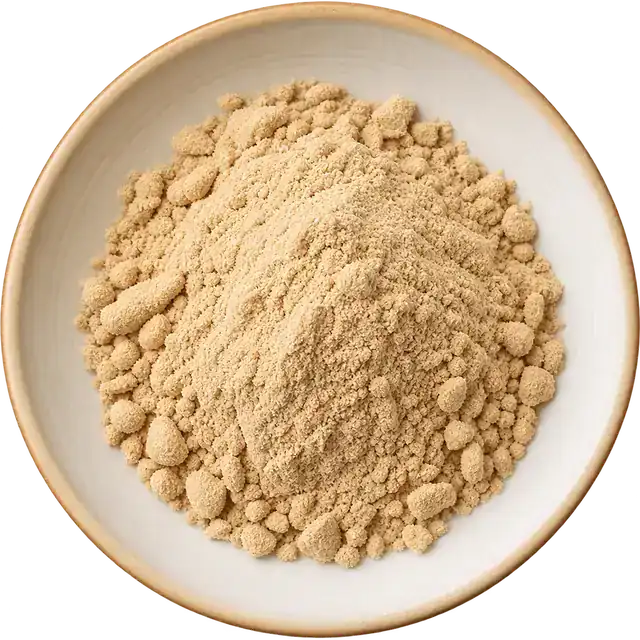

Organic ashwagandha root powder with verified withanolides
A root-only powder with verified withanolide content, for supplement and traditional-formulation manufacturers who need consistent batch-to-batch documentation.
Indicative price: $8.50–$9.00/kg (Ex-Warehouse) · In stock, ships within 2-3 business days
- Certified organic and non-GMO
- Certificate of Analysis with every batch
- 100 kg minimum order
Pricing, availability and terms
| Indicative price | $8.50–$9.00/kg (Ex-Warehouse) |
|---|---|
| Volume pricing | 100 kg: $9.00 300 kg: $8.70 500 kg: $8.60 800 kg: $8.50 |
| Availability | In stock: 1,500 kg on hand. Ships within 2-3 business days |
| Lot / crop year | 2025 |
| Minimum order | 100 kg |
| Payment terms | Prepayment |
| Origin | India, processed by Agronic Food Pvt. Ltd. |
Quantities and prices are indicative and confirmed on your written quote. Ordering, credit and returns.
Description
Our organic ashwagandha powder is milled from the root of Withania somnifera, with no stem or leaf material, and carries 0.3% withanolides verified by HPLC. It is supplied as a botanical ingredient for dietary supplement, beverage and traditional-formulation manufacturers.
Finished-product claims are the responsibility of the manufacturer. We supply the ingredient with its documentation.
Product specification
| Botanical name | Withania somnifera |
|---|---|
| Plant part | Root |
| Withanolides | 0.3% (HPLC) |
| Country of origin | India |
| Shelf life | 24 months |
| Storage | Cool, dry, dark place; airtight container |
Quality testing, every batch
| Parameter | Limit / result | Method |
|---|---|---|
| Particle size / mesh | 98% passing -0.300 mm (±5%) (typical 99.6%) | Through Sieve Analysis |
| Loss on drying (moisture) | Max. 10% (typical 5.9%) | IS : 1797 |
| Total ash | Max. 7% (typical 4.7%) | API (Part-1) |
| Lead (Pb) | Max. 0.5 ppm (typical 0.2 ppm) | AOAC method 2015.1 |
| Cadmium (Cd) | Max. 1 ppm (typical BLQ (LOQ 0.05 ppm)) | AOAC method 2015.1 |
| Arsenic (As) | Max. 1 ppm (typical 0.19 ppm) | AOAC method 2015.1 |
| Mercury (Hg) | Max. 0.1 ppm (typical BLQ (LOQ 0.05 ppm)) | AOAC method 2015.1 |
| Total plate count | Max. 10⁵ CFU/g (typical <10 CFU/g) | ISO 4833-1:2013 |
| Yeast & mold | Max. 10³ CFU/g (typical <10 CFU/g) | ISO 21527-2:2008 |
| E. coli | Absent | ISO 16649:2001 |
| Salmonella | Absent in 25 g (typical Absent) | ISO 6579-1:2017 |
| Steam sterilization / kill step | Steam sterilised | |
| Allergen statement | Allergen free | |
| Shelf life | 24 months |
ETO / irradiation: Steam sterilized at origin
Certificates for this product
| Certificate | Held by | Certified by | Number | Verify |
|---|---|---|---|---|
| USDA Organic (NOP) | Global Palate | [CCOF] CCOF Certification Services, LLC | 5561008527 · exp. 2027-01-01 | Verify |
| NOP organic import certificate | Global Palate | [CCOF] CCOF Certification Services, LLC | 5561008527 · exp. 2027-01-01 | Verify |
| FDA food facility registration | Global Palate | US Food and Drug Administration | ||
| Kosher | Agronic Food Pvt. Ltd. (Origin processor) | |||
| Halal | Agronic Food Pvt. Ltd. (Origin processor) | |||
| Non-GMO | Agronic Food Pvt. Ltd. (Origin processor) | |||
| FSSC 22000 | Agronic Food Pvt. Ltd. (Origin processor) | |||
| HACCP | Agronic Food Pvt. Ltd. (Origin processor) | |||
| GMP | Agronic Food Pvt. Ltd. (Origin processor) | |||
| Gluten free | Agronic Food Pvt. Ltd. (Origin processor) |
Purity
- Free from adulteration and additives
- Non-GMO verified
- Free from irradiation
- No synthetic compounds
- USDA Organic
Allergen statement: does it contain…
Facility cross-contact and shared-line information is provided with the batch documents on request. Batch results are reported on each Certificate of Analysis.
Get the batch documents
Enter your details and we will email the Certificate of Analysis, specification sheet and certificates for Organic Ashwagandha Root Powder. No account needed.
Things to know about our Organic Ashwagandha Root Powder
A root-only botanical, documented for formulators.
USDA Certified Organic
Grown and processed to organic standards.
Non-GMO
Verified non-GMO ingredient.
Root only
No stem or leaf material.
Gluten free
Tested batch by batch.
0.3% withanolides
Verified by HPLC.
Formulation ready
Supplements, beverages, traditional blends.
Frequently asked questions
1. What is the wholesale pricing for Organic Ashwagandha Root Powder?
Indicative pricing is $8.50–$9.00 per kg, Ex-Warehouse, depending on volume. Request a quote and we will confirm pricing within 2-3 hours.
2. How are withanolides verified?
Withanolide content is verified by HPLC and reported at 0.3%. The result for each batch is on its Certificate of Analysis.
3. Which part of the plant is used?
The powder is made from the root of the Withania somnifera plant.
4. What is the minimum order?
The minimum order is 100 kg. Request a quote for your quantity.
5. Is it stocked in the United States?
Yes. Inventory is held in our warehouse in Compton, California. In stock, ships within 2-3 business days.
6. What does it look like?
It is a fine, light-brown root powder.
7. How is it tested?
Every batch is tested for heavy metals, microbiological safety and pesticide residue, and the results are reported on the batch Certificate of Analysis.
8. Does it contain any major allergens?
No. The ingredient is free from the major allergens listed in its specification.
9. What is the shelf life and how should it be stored?
Shelf life is 24 months. Store in a cool, dry place in a sealed container.
Buying from U.S. stock vs importing direct
What changes for your purchasing and QA teams.
- The ingredient is already in the U.S., not waiting on ocean freight and customs.
- A batch Certificate of Analysis is available before you commit to an order.
- In stock, ships within 2-3 business days.
| Global Palate | Importing direct | |
|---|---|---|
| Where the stock is | U.S. warehouse, Compton CA | At origin until shipped |
| Minimum order | 100 kg on powders | Often container-scale lots |
| Documentation | Batch COA; certificates on request | Varies by supplier |
| Delivery | LTL or full-truckload within the U.S. | Ocean freight plus customs clearance |
| Contact | One sales team for quotes and reorders | Often several parties |